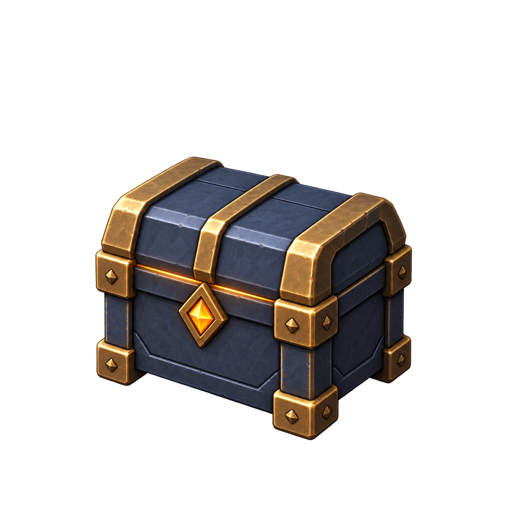
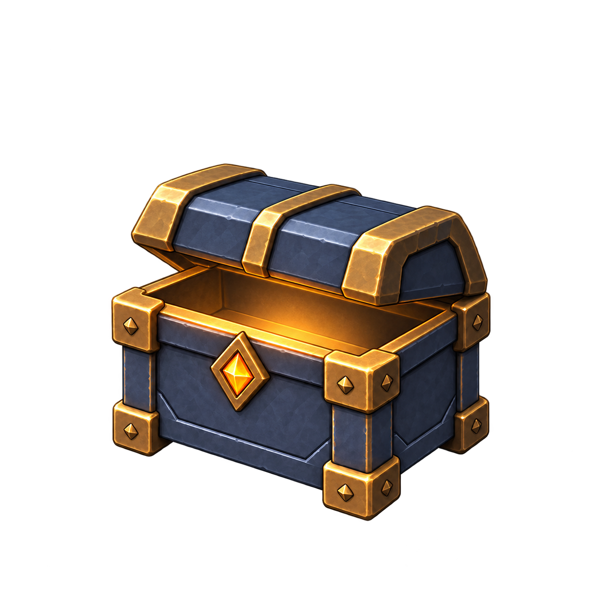
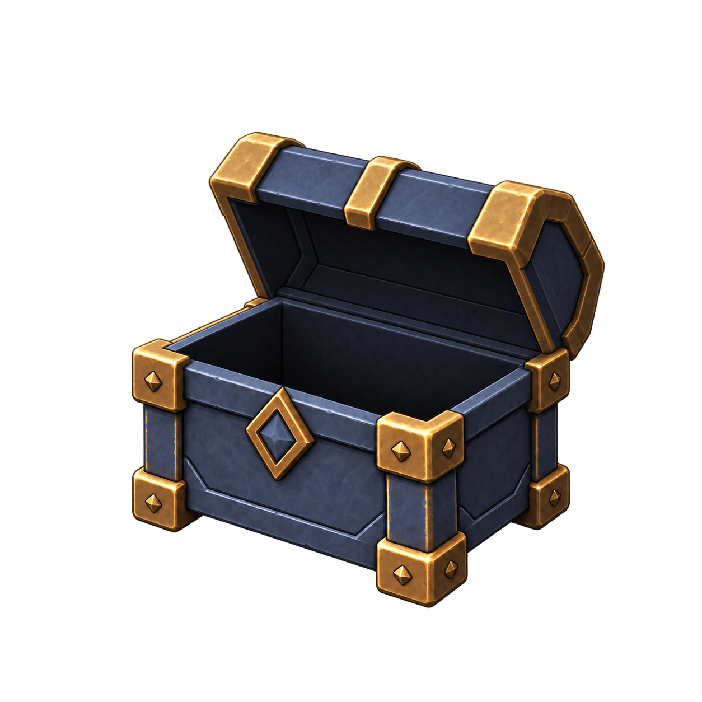

CRYPTFORGE / FOUNDRY PROPS / 01
Ödül var. Açılıyor. Tükendi.
Aynı sandığın üç şeffaf görseli. Geniş pirinç çerçeve, koyu demir gövde ve sabit kor kilidi.
01 · Kapalı

İnce ışık çizgisi ve tek parlak kilit.
02 · Açılma

Işık sandığın içinde kalıyor.
03 · Boş

Sönmüş kilit ve karanlık iç hacim.
Ölçek ve gövde sürekliliği
Görseller yükleniyor…
Bu bir tarayıcı ölçek çalışması; Unity veya telefon görüntüsü değil. 1080 piksel / 9 birim varsayımında 90 piksel yaklaşık 0,75 dünya birimidir. Panel daralınca görüntü de küçülür. Üç kare kaba açılma kontrolüdür; son animasyon değildir.
Tüm durumlar aynı kaynak koordinatını ve ölçeği kullanır; her kare ayrı ayrı sınırlara sığdırılmaz. Gövde ve ışıkta küçük üretim farkları hâlâ var.
Sonraki uygulama adımı
Gerçek sahnede ölçek, zemin kontrastı ve kahramanla örtüşme kontrolü; ardından ortak pivotlu, paylaşılan sprite ithalatı. Ödül mevcut temas anında verilmeye devam edecek. Görsel açılma ödülü geciktirmeyecek veya tekrarlamayacak.
Çalışma notları · Üretim promptları · Dosya ölçümleri